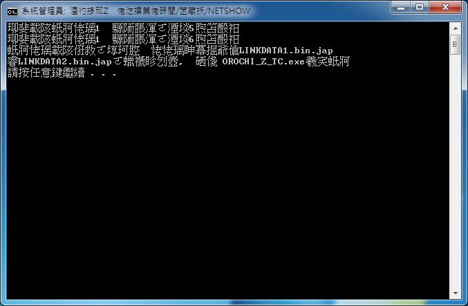

什麼是中文化包？
如果你已經有日文版，可以使用中文化包變成中文版。
如何使用中文化包？
步驟 1
解壓縮檔案後，把「LINKDATA1.exe、LINKDATA1.IDX、LINKDATA2.exe、LINKDATA2.IDX、ORCOCHI_Z_TC.exe、升級中文.bat 」六個檔案，全部放在下列路徑裡面：
C:\Program Files\KOEI\MUSOU OROCHI Z\
Windows 問你是否覆蓋時請按「是」。（沒有問的話表示你放錯地方）
步驟 2
點兩下「升級中文.bat」，中文化處理可能需等候近十分鐘，直到出現「請按任意鍵繼續．．．」表示處理完畢。成功的話，整個畫面應該會像這樣：

Windows Vista 或 Windows 7，請先關閉 UAC 省得麻煩。
步驟 3
最後改用「ORCOCHI_Z_TC.exe」來啟動遊戲，就 OK 了！
補充：遊戲存檔不見了
如果中文化後，卻發現遊戲進度不見了，應該是存檔路徑的問題。因為……
日文版的存檔路徑：...\我的文件\KOEI\Musou OROCHI Z
中文版的存檔路徑：...\我的文件\KOEI\Musou OROCHI Z TC
所以，看你是要重新命名資料夾的名稱，還是要把日文版的檔案丟到中文版裡面都可以，兩種版本的紀錄檔是一樣的。